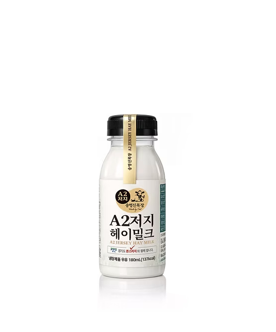
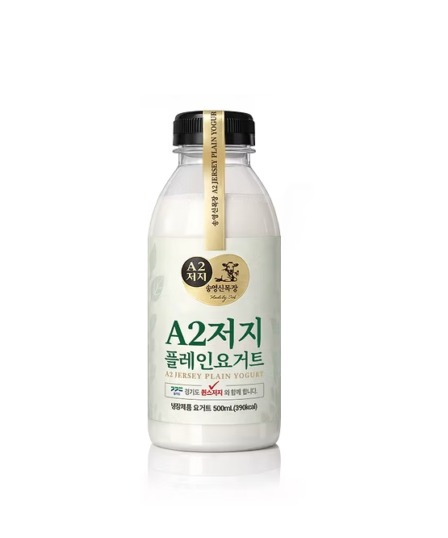
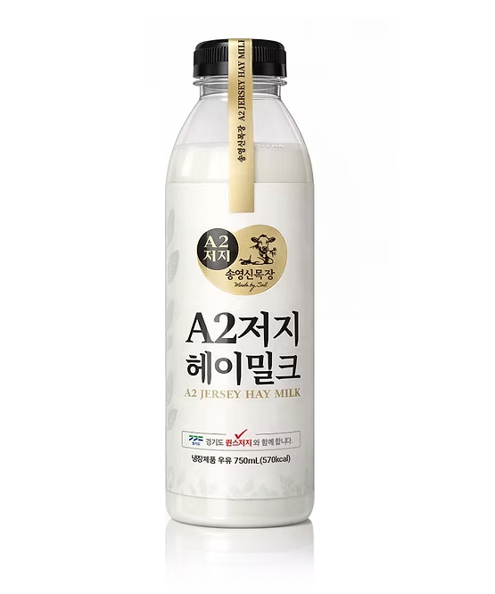

Song Yeong Shin Farm — A2 Jersey Lineup
국내 1.6%의 희소한 A2/A2 저지소, 사일리지 없이 건초만 먹은 헤이밀크.
한 잔의 일상부터 식탁의 풍요까지 — 세 개의 단위로 각각의 자리에 놓이는 송영신목장 제품 상세페이지입니다.
— 디자이너 공유용 시안 · Draft v1

Daily / 137 kcal
물보다 가벼운 목넘김, 저지의 깊이. 가장 작은 단위가 가장 정직한 단위가 되는 한 병.
View detail →
Plain / 390 kcal
설탕도, 향료도, 첨가물도 없이. 두 가지 — 우유와 유산균 — 만으로 완성되는 ‘진짜 플레인’.
View detail →
Family / 570 kcal
한 병이 식탁을 채우는 단위. 가족이 둘러앉아 한 주를 함께 보내기에 가장 송영신스러운 750ml.
View detail →